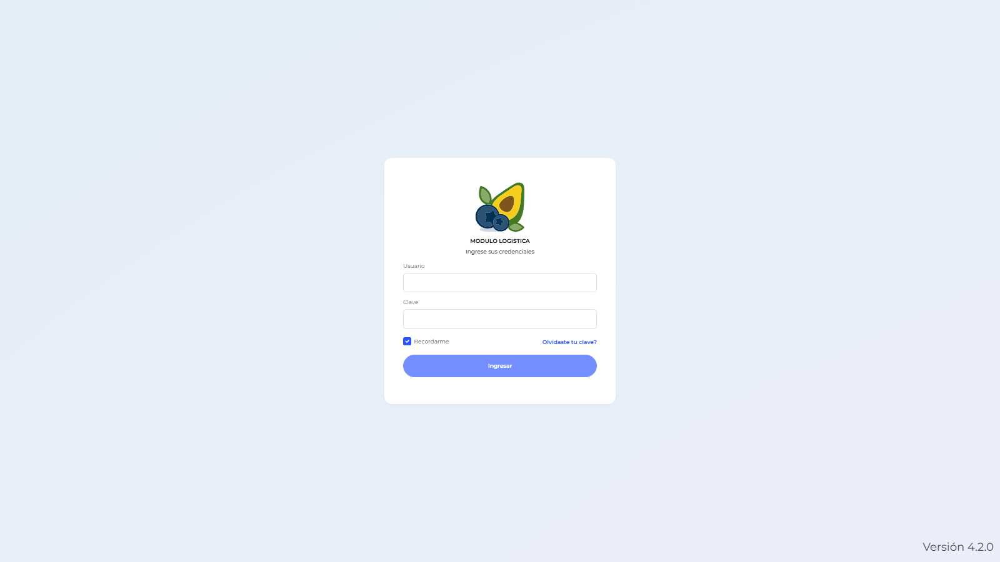
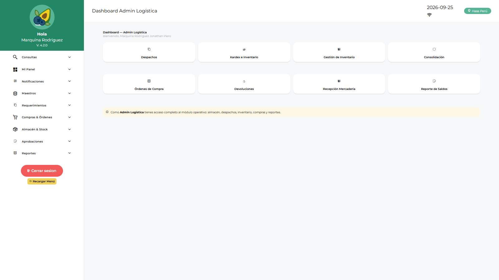
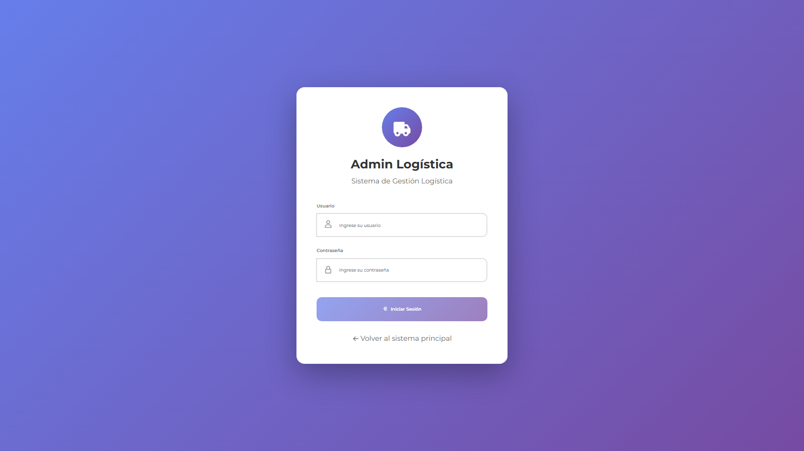
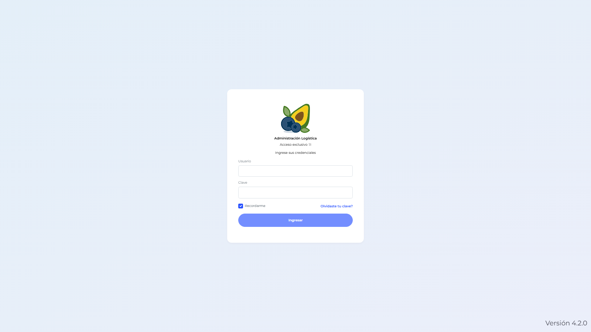

Manual de Usuario — Admin Sistema (TILOGIST)
| Campo | Valor |
|---|---|
| Código de rol | TILOGIST |
| Nombre | Admin Sistema / TI Logística |
| Pantalla inicial | Dashboard Admin Sistema (/main/dashboard-tilogist) |
| Consolas | /administracion (con /admin-login) y /admin-logistica |
| Video tutorial | ../video-tutoriales/VIDEO_TUTORIAL_TILOGIST.html |
1. ¿Quién eres?
Eres el administrador técnico de la plataforma Logística. Tu rol es el de mayor alcance: configuras usuarios de todos los roles, permisos, menús, parámetros, correo, plantillas, branding y auditoría.
2. Acceso
- Ingresa a la URL de la aplicación → pantalla de login.
- Escribe tu usuario y contraseña corporativos.
- El sistema te lleva automáticamente al Dashboard Admin Sistema.

Para entrar a la consola de administración logística, abre /admin-logistica/login e inicia sesión con tu cuenta.
3. Tu panel de inicio
El Dashboard Admin Sistema muestra indicadores generales: usuarios activos, empresas configuradas, estado de sincronización y accesos rápidos a la administración.

4. Pantallas disponibles
| Grupo | Pantalla | Qué haces ahí |
|---|---|---|
| Panel | Dashboard Admin Sistema / Admin Logística / Logística / Jef. Logística / Jef. Licitaciones / Compras / Finanzas / Operativo | Indicadores y supervisión |
| Configuración | Parámetros | Sincronizar maestras y configuración local |
| Configuración | Notificaciones | Ver avisos de saldos pendientes |
| Requerimientos | Requerimientos / Saldo | Crear y revisar requerimientos (testing/soporte) |
| Compras | Solicitudes de Compra, Consolidaciones, Cotizaciones, OC | Supervisión del flujo de compras |
| Compras | Solicitudes y Órdenes de Servicio, Conformidad | Supervisión del flujo de servicios |
| Almacén | Devoluciones de Consumo, Conformidad de Despacho | Soporte del flujo de consumo |
| Aprobaciones | Aprobación OC / OS | Soporte en aprobación de órdenes |
| Maestros | Ítems, Commodities, Proveedores, Aprobadores | Mantenimiento de catálogos |
| Reportes | Reportes de Compras, Requerimientos, Logístico | Consulta y exportación |
5. Consola /admin-logistica — todas las pestañas
Como TILOGIST ves todas las pestañas:
- Dashboard / Bandeja / Aprobar Consumo / Aprobar SC / Aprobar SS — gestión de aprobaciones.
- Maestros / Gestión Proveedores — catálogos.
- Usuarios — crear y editar usuarios de cualquier rol (eres el único que puede crear otros TILOGIST).
- Áreas / Usuarios por Área / Flujo Aprobación Área — estructura organizacional y flujos de aprobación.
- Formato PDF / Empresa / Parámetros / Plantillas Almacén — configuración por empresa.
- Incremento Cantidad OC — autorizar incrementos de cantidad en OC.
- Aprobadores — asignar aprobadores por flujo.
- Auditoría — trazabilidad de acciones.
- Conformidad Servicio — configuración de la conformidad.
- Permisos por Rol — asignar/quitar las claves
ADMINLG_MENU_*a cada rol. - Migrar Adjuntos — utilidad de migración de adjuntos a servidor.

6. Módulo /administracion (clásico)
Acceso previo por /admin-login. Incluye: usuarios, roles, áreas, perfiles, flujos, aprobadores, usuarios por área, versión de API, e-mail de proveedores, SMTP, plantillas de correo y PDF, colores, permisos de roles, menús dinámicos y plantillas de menú, empresas, branding y sincronización.

7. Procedimientos frecuentes
Crear un usuario nuevo
- Entra a
/admin-logistica→ pestaña Usuarios. - Clic en Nuevo usuario.
- Completa datos y selecciona el rol (
idrol). Puedes asignar varios roles separados por coma (ej.LOLOGIST,ALLOGIST). - Guarda. El usuario ya puede iniciar sesión en la app operativa.
Configurar el menú de un rol
- Pestaña Permisos por Rol → selecciona el rol.
- O desde BD: tabla
LOGISTICA_ConfiguracionPermiso, clavesMENU_TYPE,MENU_JSON,ITEMS_VISIBLES,LAYOUT_ACCORDION. - Guarda e informa al usuario que recargue la página (el menú se recarga automáticamente por evento
storage).
Revisar auditoría
Pestaña Auditoría → filtra por usuario, fecha o acción.
8. Restricciones
- No ves aprobaciones por área ni reingresos (esos guards solo admiten APLOGIST/ADLOGIST/JLOLOGIST y roles operativos). Para esos flujos usa una cuenta ADLOGIST.
- No ves pantallas físicas de almacén (despachos, kardex, recepción) con el rol TILOGIST puro.
9. Problemas comunes
| Problema | Solución |
|---|---|
| Un usuario no ve un menú | Revisa LOGISTICA_ConfiguracionPermiso para su idrol o asígnale la clave en Permisos por Rol |
| No puedo cerrar sesión | Hay requerimientos sin sincronizar: ve a Parámetros → Sincronizar |
| Cambios de menú no se ven | Pedir al usuario cerrar sesión y volver a entrar, o usar F5 |